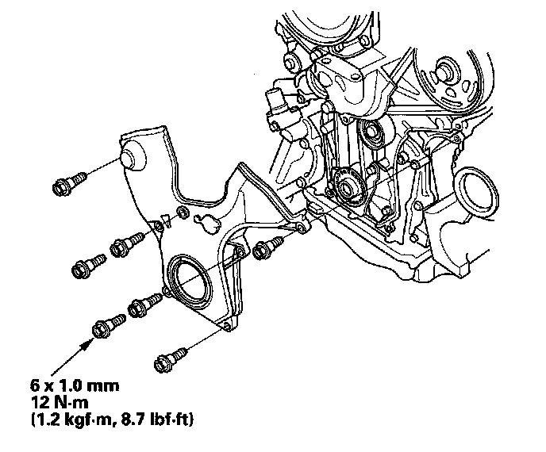
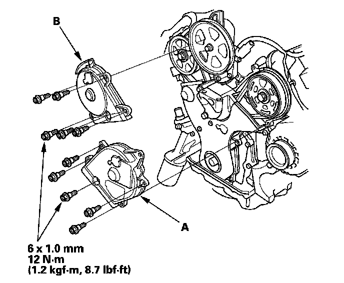

System Specifications
Auto-tensioner
Lower Cover

Front upper cover (A) and rear upper cover (B)

Crankshaft Pulley
Torque the bolt to 65 N-m (6.5 kgf-m, 47 lbf-ft) with a torque wrench and heavy duty 19 mm socket (C).
Mark the bolt head (D) and crankshaft pulley (E) as shown, then tighten the bolt an additional 60° (The mark on the bolt head lines up with the mark on the crankshaft pulley).